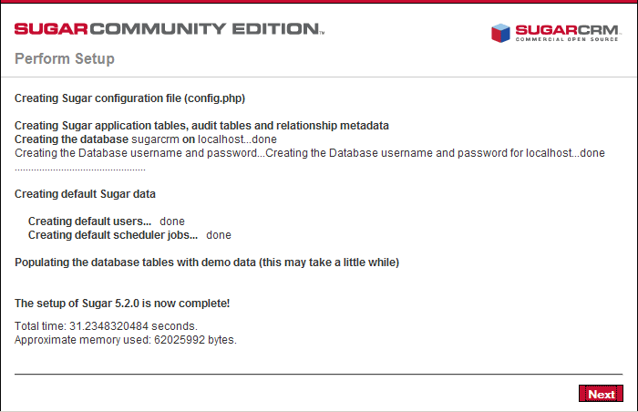

Install SugarCRM
1. Add ports 80 to the App security group by going to the SecGrp tab and clicking on the Make Authorization icon
For extra security use your client IP address. e.g. 192.66.78.50/0 IP address rather 0.0.0.0/0 which allows all IP addresses access.
2. Enter 80 in both the "From Port" and "To Port" fields and press "save"

3. Download the magento cookbook from http://community.opscode.com/cookbooks/sugarcrm and unzip into the cookbook folder of your chef repository. Create node and role files for sugarcrm in the chef repository similar to the apache2.json files.
4. When you have a server running from your base image go to the server tab and enter sugracrm into the chef node. click on the chef icon
***add image***
5. Use the Elastic IP or Public DSN from the server tab in a browser to go through the Application Configuration.
eg: http://75.101.999.999/Application
a. The Application setup wizard comes up.
b. Scroll down and click on the Next button.
c. Accept the license (GPL) and click on Next.
d. Select Typical Install and click on Next.
e. The database type (MySQL) should be detected.
f. On the Database Configuration page, fill in a name for the Application database (e.g. Application) (will be created by the installer automatically if it doesn't exist). The Host Name is localhost. Then fill in the username of the MySQL administrator (root) and his MySQL password (yourrootsqlpassword). Then scroll down.
g. Select Define user to create from the drop-down menu to create a MySQL user for Application (this user will be created by the setup wizard). Fill in a name for that user (e.g. Application) and a password. If you want to have some demo data to play with, select Yes from the Populate Database with Demo Data? drop-down menu. Click on Next afterwards.
h. Next fill in a password for the Application admin user (username is admin).

i. Select your locale and currency settings.
j. You should now see a summary of your selected options. If everything's ok, click on Install.
k. Application is now being installed. Click on Next afterwards.

l. If you want you can now register to receive newsletters - this is optional.
m. You should now see the Application login screen. Fill in admin as the username and the password you specified in the setup wizard.
n. After the first login, you are asked to select your time zone. Select the right one and click on Save,
o. This is how Application looks.
A user guide for your Application version can be found on http://www.sugarforge.org/frs/?group_id=6.